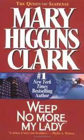

This has to be one of most favorite reads ever. It is a series of seven fantasy novels written by British Author J.K. Rowling. The book is about a boy who loses his family when he is still a toddler. The book is about his life after learning that he comes from a family that practices magic. He is enrolled at Hogwarts School of Witchcraft and Wizardry. The novels chronicles the lives of the young wizard, Harry Potter, and his friends Hermoine Granger and Ron Weasley. The novels have been made into an 8 part series. The script for the series has very few deviations from the books therefore if reading isn't your forte, then Warner Bros has got you covered.
This is a book by Mary Higgins Clark. The book is about Elizabeth Lange who is haunted by the loss of her sister, Leila, who died mysteriously. Invited to Cypress Point Spa by a friend, she finds herself confronted by a cast of characters who all had motives for the killing. She quickly discovers her own life may also be under threat. This is a must-read for mystery lovers. 
This is an emotional book by John Green.
It's about teens fighting cancer. To read more about it, check this link
Visit sparknotes
The novels are written by Lauren Kate. The series is a young adult, fantasy, paranormal romance published in 2009 under Delacorte Press. The novel revolves around a young girl named Lucinda "Luce" Price who is sent to Sword & Cross Reform School in Savannah, Georgia, after she is accused of murdering a boy by starting a fire. At the reform school, she meets Daniel, a handome boy whom she feels inexplicably drawn to, and believes that she has already met before. The book revolves mostly around the concept of religion, fallen angels and reincarnation.